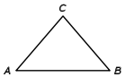
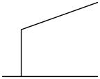
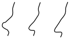
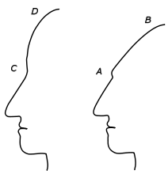
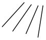

Беседа 3157 от 3877 · Беинса Дуно
Обичайте – ценете!
Сряда, 5 ч сутринта
„Отче наш“
„Всичко в живота е постижимо“
„Бог е Любов“
Всички сте се подмладили, с колко години? Напред ли отидохте или назад се върнахте? Когато човек напред върви, къде отива?

Казвате: „2 по 2 е 4. И 2 и 2 е 4.“ Защо 2 и 2 е 4 [и] 2 по 2 е 4, когато 5 по 5 е 25 и 5 и 5 е 10, 3 по 5 е 15 и 3 и 5 е 8? Защо туй съвпадение на някои числа? Вие имате тогава 73. Ако го обърнете, ще стане 37. Но ако имате 77, и да го обърнете, пак е толкова. По някой път вие искате един ред на нещата. Има известен ред в природата, който не може да се измени. Запример вие искате някой човек да измени своята обхода към вас. Защо? Имате желание някои да ви обича. Защо? Казвате: „Аз го обичам.“ Мислите ли, че ако обичате някого, правите добро на него? Вие не мислите правилно. Човек, ако обича, прави добро само на себе си. Не само това да се каже, но да го съзнавате. Казвате: „Аз го обичам.“ Щом ти го обичаш, ти правиш добро на себе си. Щом аз оценявам любовта, с която някой ме обича, правя добро на себе си. Ти, ако ме обичаш, правиш добро на себе си; аз, ако оценявам твоята любов, правя добро на себе си. Аз, ако те обичам, правя добро на себе си и ти, ако оценяваш моята любов, правиш добро на себе си.
Тогава произтича една дисхармония в света. Казвате: „Той не ме обича.“ То е негова работа. Казва: „Той не оценява любовта ми.“ То е негова работа. Ти обичай хората, без да се интересуваш дали те оценяват любовта ти. Може да се интересуваш, но интересувай се ти дали ги обичаш. По кой начин може да се докаже, че ти обичаш някого? Да кажем, ако се иска едно доказателство, как ще докажете, че обичате някого? С какво ще докажете? Любовта е нещо неуловимо.
Сега вие имате стари възгледи. Когато човек стане възрастен, като остарее, мисли, че знае повече. Казва: „Много зная. Главата ми много е патила.“ Какво може да пати една глава? Най-първо, този израз на български „Главата ми е много патила“ няма значение. „Пати“ значи „пате“, което плава във водата. „Патила“ значи „народила патета“. Каква дума е тя? (– „Гръцка, значи „страдам“.“) Какво значи „страдание“? Ако дойдем да страдаме… Страданието не е нищо друго освен едно неразположение, че нещата не стават както ти искаш. Всички ние страдаме от неразбиране на ония Божествени закони. Запример ние се занимаваме с любовта, но любовта има известно приложение. Ти може да имаш една любов, която да осакати паметта ти. Пък може да имаш една любов, която да развива ума ти. Може да имаш една любов, която да осакати сърцето ти, пък може да имаш една любов, която да облагороди сърцето ти. Казвате: „Защо е така?“ Така е сега. Имате една наклонена линия.

Вие изучавате един език. Коя е първата дума, с която започвате? Кои думи са най-стари? Думата „Иван“ стара дума ли е? Тя е много нова, детинска дума. А думата „раждам“? „Иван“ ли е по-стара дума или „раждам“ е по-стара? Глаголите са по-стари думи. Те показват действие. Искам да направим връзка. Имате неправилни глаголи на френски. Кои глаголи са неправилни? Филологически няма да се спирам. Има една неправилност в глаголите. Щом има неправилни глаголи, има и правилни глаголи. Има цяла една таблица с правилни глаголи. В български език имате три рода. Но то не е правило за всички езици. В турски език има само един род. На български казваш: „един мъж, една жена, едно дете“. На турски казват: „бир еркек, бир къръ, бир чучук“. Питам: „Защо в български има три рода, а на турски само един?“ И да ви се разправя, малко отвлечена работа е. Има си своите причини. Или ако вземете начина на писането в разните езици. В еврейски се пише отдясно наляво; ако вземете китайски, пишат отгоре надолу; ако пишете на европейски езици, ще пишете отляво надясно. Бялата раса пише отляво надясно. Всичкото туй писане е свързано с изменението на земната ос. Сега това трябва да се доказва.
Животните ходят хоризонтално. Когато се е създала земната ос, в туй положение тя била успоредно на орбитата на Земята. А пък когато растенията са се създали, Северният полюс не е бил там, дето е сега. Той е бил точно на обратната страна. И когато човек се е създавал, изменила се е оста. Следователно и ние сме се изменили. Когато оста на Земята не била като сегашната, са се създали растенията. Когато оста е била хоризонтална, създали са се животните; когато оста е станала перпендикулярна на своята орбита, създал се е човекът. Това са сега твърдения. Казвате: „Докажи го туй.“ Какво ще го доказвам? За да се доказва нещо, значи хората са слепи. Има неща, аз ги виждам. Какво ще доказвам, че този предмет има червен цвят? На онзи слепия човек трябва да му доказвам, по някакъв начин да му обяснявам, че е червен. Но аз виждам, че е червен. Какво ще доказвам? Червеният цвят прави хората подвижни. Що [е] червеното? Това, което прави хората подвижни, това е червеното. Щом се карате, щом се побийвате, щом се движите, щом работите, всичко туй се дължи на червения цвят. Какво нещо е червеният цвят? Копаеш с мотиката, пишеш – всичко това е червеният цвят. Казвам: Туй, което създава работа на хората, то е червеният цвят. Пишеш, четеш – това е червеният цвят. Недоволен си – това е червеният цвят. Говориш – това е червеният цвят. Риташ – това е червеният цвят. Скачаш – това е червеният цвят. Лягаш, ставаш, падаш – това е червеният цвят. Щом престане този цвят у тебе, искаш да се успокоиш. Премахни червения цвят – умира човек. Защо умира? Няма червения цвят. Ти си едно колело – дойде червеният цвят, върти колелото, той произвежда движението. Спре се водата във воденицата – воденицата остане тиха, умряла. Казваш: „Да се махне този червен цвят.“ Щом се махне червеният цвят, човек ще дойде до какво положение? Щом умре човек, оста му остава хоризонтална с орбитата на Земята. Щом възкръсне, оста е перпендикулярна. Вие като ходите, вашата ос е вече перпендикулярна. Кое [е] по-хубаво сега – хоризонтален ли да бъдеш или перпендикулярен?
Казвам: Да пренесем. Ние имаме отношение към Бога. Три отношения имаме, които са правилни. Любовта е едно правилно отношение към Бога. Мъдростта е едно правилно отношение към Бога. И Истината е едно правилно отношение към Бога. Върху тия отношения ние не може да разискваме. За същината на любовта, каква е, ние не може да разискваме. Казваме: „Туй е любов, то е нещо велико, безгранично“, но какво нещо е безгранично, ние нямаме понятие. Ти ако речеш да разискваш какво нещо е любовта, ще изгубиш смисъла на живота. Да разискваш какво нещо е любовта, то е все едно да извадиш окото си, да го изследваш как е направено. Не бутай окото си, не ти трябва това. Някои искат да човъркат какво нещо е любовта. Ти, ако речеш да изследваш какво нещо е любовта, ще изгубиш любовта. Задоволи се да можеш да виждаш всичко с окото. Какво нещо е окото ти, има начин за изучаване, но не с такива доказателства. Ти ще имаш едно огледало и ще изучаваш своята сянка. Ще изучаваш окото си в огледалото, ако искаш да се изучаваш.
Хубаво е по някой път да се оглеждате. Защо някои от вас не искате да се оглеждате? Казва: „Той е станал вече много умен.“ Умният не се оглежда. Аз зная защо не се оглежда. По-напред бил красив, сега остарял, набръчкало се лицето, не иска вече да се оглежда. Казва: „Не искам да се оглеждам.“
Щом си остарял, ти си виноват. Всеки, който остарява и не поумнява, е виноват. Не че е виноват. Непременно детето, което се подмладява и не учи, реве и плаче, дига шум, минава за такъв аристократ. Погледнеш – дигне врява в къщата, заповядва на всичките. Голям човек дошъл, как да не обръщат внимание на него? Казва: „Вие знаете ли кой съм аз?“ Баща му го гледа, гледа. „Кой си? Едно дете. Не те зная кой си.“
Че, кой от вас знае откъде е дошъл? Имате един син, знаете ли откъде е дошъл? Имате един приятел, не знаете откъде е дошъл. Даже нямате ясна представа за вашите приятели. Вашият приятел има едно специфично ухание. После, той си има известна форма, която никой друг няма. Неговият нос е така направен, че втори нос като неговия няма такъв екземпляр. Той има едно ухо, че няма като неговото. Вие ще кажете, че има и други уши. Има и други уши, но такива специално няма, непременно има малко различие, вие не го забелязвате.

Казвам: Искам вие да се самовъзпитавате. Как ще възпитате младото поколение? Говорят за душата на детето. Каква е тази душа на детето? Той себе си не разбира, иска да възпита човешката душа. То е туй, което не може да се възпита. Човешката душа не се нуждае от възпитание в този смисъл, както хората говорят, да се подигне душата. То е едно цвете, няма какво да се подига. Едно цвете може да се полее само малко на корените и да се остави. Някой път нали сте гледали някое цвете – дълго време като не го поливате, увисват листата му. Ако идеш на туй цвете да му говориш, да го милваш, цветето казва: „Твоите милувки не ме интересуват.“ Малко водица като капнеш, след половин час, един час, то се освежи.
Казвам: Сега вашите отношения към Бога трябва да бъдат правилни. Любовта е първото отношение. Всичко друго е второстепенно. Оттам трябва да започнете. Тя е основата на нещата в света. Ти туряш една основа и върху тази основа трябва да градиш.
Вие сега се спирате. Старите казват: „Остаряхме.“ Виновати сте. Защо? Защото не сте поумнели. Надолу гледате. Вярвате, че имате едно заблуждение. Казвате: „От пръст е направен човек.“ Лъжете се. Че дрехата ви е направена от пръст, прави сте. Но че душата, която е във вас, че е от земя, лъжете се. Защо тогава вярвате, че сте от пръст? Казвате: „Като умрем, ще идем в черната земя.“ Черната земя ще иде в земята, но вашата душа ще иде в друг свят. Онзи свят, от който душата е излязла в света на смъртта.
Сега на вас са натрапени възгледи от миналото. Казвате: „Ще умрем.“ Каква е вашата идея, че ще умрете? Защо ще умрете? Аз искам да зная защо ще умрете. Нали казвате, че всяко нещо си има причина? Каква е причината, че искаш да умреш? Коя е подбудителната причина? Искаш да идеш в училището – каква е причината? Искаш да добиеш знание. Щом идеш в училището и не учиш, ти само ще бъдеш една спънка за хората. Тогава вашето положение ще бъде както положението на една стара госпожа, която ми разправяше една своя опитност. Тя бе на около 60–65–70 години, от Варна. Сънува, че отива в оня свят, сънува жив сън. Казва: „Виждам 24 души старци, умни хора, седнали, разглеждат на масата. Аз като влязох, ме питат: „Бабо, защо дойде?“ – „Дойдох, тук искам да живея.“ „Знаеш ли – казват – да четеш?“ – „Не зная.“ – „Тогава тук вода ще носиш.“ Тя казва си: „Аз, като бях на оня свят, ми беше по-добре: шетаха ми, по-добре ми беше: вода ми носеха, а тук вода да нося. Не искам да остана! Връщам се пак назад.“ Тя не е разбрала.
Преди години тук имаше болни братя, доста учени хора бяха, страдаха. Бях ги накарал да носят вода, за да ги излекувам от болестта. На един брат, който беше неврастеник, който беше болен и страдаше от слаби гърди, казах да вземе две стомни вода и по три пъти на ден – сутрин, на обяд и вечер, да носи вода. Казва: „Хората ще ме видят.“ Няма нищо. Като носиш болестта, хората пак те виждат. Или вода ще носиш, или болестта ще носиш. Казва: „Да не губя времето.“ Седнах да му обяснявам каква е ползата от носенето на вода. Казвам: Ти си станал нервен, изгубил си своя магнетизъм. Водата е добър проводник на магнетизма, ще мине в организма ти и ти ще се освободиш, ще се образува едно поле на деятелност. Ще опиташ два–три месеца като носиш. Тук имаше една сестра, тя беше дошла от запад някъде, с висока култура. Не може да се движи. Казвам: Ще носиш и ти вода. – „Но как – казва – Учителю, аз, старата жена, как ще нося вода!“ Ще носиш вода, ако искаш да се подмладиш. Можеш, можеш. Най-първо с една стомна, после с две стомни ще носиш. Вижда се смешно на хората, но то е закон.
Трябва да вярвате в ония Божествени закони, които съществуват, и да не ви е срам от никаква работа, която носи здраве. Всяко нещо, което носи здраве на човека, всяко нещо, което придава на неговата сила, което освежава в малка степен неговия ум и сърце, те са Божествени работи, няма какво да ни е срам. Някой път някои от вас страдате. Ако ходите по пътя, ще видите някое камъче не на място, ще се наведеш и го туриш на място и в една година вие [като] туряте камъчетата на място, знаете ли каква полза ще направите на себе си? Ти с всяко навеждане към земята – в тебе има някои неща, които са непотребни, – като се наведеш да вземеш този предмет, непотребната сила отива в земята и ти се освобождаваш. Вземи един лист, тури го настрана. Ти казваш: „Кой го е хвърлил?“ Ония хора не са го хвърлили заради тебе. Наведи се, вземи го. Десет пъти като се наведеш на ден, за 10 деня са 1000 пъти, ако за всяко навеждане печелиш 10 лева, ще спечелиш 10 000 лева.
Видиш една погрешка, изправи тази погрешка. Всяка погрешка, която виждате, тя има отношение към вас. Казвам: Какъв наклон ще дадете на вашата мисъл? Най-първо вие мислите защо Господ създал света така. Така не мислете. Турете в ума си мисълта, че Бог създал света да се учим. Ти имаш ръка. Знаете ли какво трябва да се прави с ръката? Аз ви давам упражнения и някои от вас от немай-къде ги правите, като един навик ще се направят упражненията. Някой казва: „Стар човек съм, как ще правя упражненията?“ (Учителят показва първото от 6-те упражнения.) Като правите упражнения, на пръсти да се подигате. Ако вие, като правите упражнения, се подигате на пръсти, вие ще регулирате доста сили и енергии. Та казвам: Като подигате тялото си, същевременно трябва да подигате и ума си. Като се навеждате надолу, и умът ви трябва да върви с вашите ръце. Контакт трябва да правите и със Слънцето, и със Земята.
Казвам: Научете едно изкуство на упражненията. Ако си женен, ще кажеш: „Сега желая да направя едно упражнение за жена си, за да бъде тя добра.“ Повтори упражнението за себе си и кажи: „И за мене, и аз да бъда добър.“ После пак за жена си. Пък ако не си женен, ще кажеш: „Правя за моя възлюблен“, за себе си после. Ако си ученик, ще направиш едно упражнение за учителя си, за себе си, после пак за учителя си. Слугата ще направи едно за господаря си, едно за себе си, пак едно за господаря си – тогава смисъл имат упражненията. Или ти стъпваш на левия си крак – то е влиянието на меките сили на любовта, едно течение има на мекота. Десният крак е на мъдростта, на знанието. Като стъпваш, ти го събуждаш. Щом се изправиш, то е вече истината, свободен си. Ти вече мислиш какво да правиш. Ще смениш едно упражнение с друго.
Та казвам: Всички съвременни теории ще се обобщят. Трябва да се изучава Земята, трябва да се изучава Слънцето. Трябва да се изучава Слънцето, за да расте отгоре. Някой път трябва да се изучава Месечината, за да може тялото ни да се пречисти. Месечината е създадена за пречистване. Някой път вие сте неразположени, може да излезете да наблюдавате Месечината. Когато искате да придобиете известна енергия, наблюдавайте Слънцето, не гледайте направо Слънцето, но хвърлете бегъл поглед към Слънцето и пак отдалечи очите си. Очите не трябва много да се фиксират. Ти, когато гледаш оная картина, гледай я, когато се отпечатва от светлината на Слънцето, на Слънцето обръщай внимание и най-после носи Слънцето, както то се отпечатва в картината.

Сега вие тази форма на главата ще носите. Каквато е вашата глава, такъв ще бъде и умът ви. Вашата форма на главата е резултат на вашите мисли, на вашите чувства и на вашата воля. Главата е един резултат. Формата на главата, формата на лицето, формата на тялото е резултат на човешката мисъл. Не само на вашата мисъл, но на мислите на ред поколения.
Следователно, като измените мисълта си, изменяте и външната форма или на главата, или на тялото, или на лицето. Щом изменението стане в коя да е част на тялото, съответно става преобразувание и в цялото тяло. Когато някой от вас иска да се подигне, ако вие сте религиозен човек и виждате, че не можете да се подигнете нагоре, значи във вас няма религия. При религията трябва да изправите гръбначния стълб. Гледам някои млади сестри започнали да си образуват гърбица. Гърбицата не е добър признак. Не позволявайте да се образуват гърбици. Никаква гърбица! И на 70, и на 120 години пак да се усещаш като на 21 година. Не се самозаблуждавайте с вашите години. Годините нищо не значат. На 120 години какво ще добиеш, кажете ми. На 120 години турям запетая след 12, на 120 години ти си на 12 години; нулата, това са условията. На 120 години ти си направил в своята зодия едно обръщение. На 120 години като станеш, ти си само на една година, обиколил си веднъж своята зодия. Ти си извървял един път от 25 000 години. Съкратен път, бързо си вървял, пътувал си и си извървял един път от 25 000 години. 120 има 12 зодии, 12 месеца има годината, всеки един месец ти си имал особена характерна черта. Първият месец, март, то е за главата. Всичките месеци са назначени по краката, по лицето, по гръбнака, навсякъде. Като живееш 120 години, ти си живял един отличен живот, бил си навсякъде в пътя си. Втори път ще влезеш и пак ще минеш.
Съвременните астролози изучават зодиака, но зодиака на нашата Земя. Ако идеш да живееш на Слънцето, Слънцето има друг зодиак. Зодиакът на Слънцето му взема 20 милиона земни години, взема 25 000 години, а в Слънцето 20 милиона години, за да се образува около неговата ос един малък кръг. Ако съкратите 25 000 години на 120, какво ще получите? Е Ц [?] милиона години на колко могат да се съкратят? Щом турим 120 милиона години, показва, че условията за живот на Слънцето са много по-богати и обширни, отколкото на Земята.
Или може да кажем, че в Слънчевата система Земята се намира най-долу. Върху нас Юпитер влияе, върху нашите лични чувства, върху его-то на човека. Венера влияе върху чувствата. Марс влияе върху активността, при ушите. Сатурн влияе върху ума, върху разсъждението, всичко, каквото може, опитва. Месечината влияе върху въображението на човека, върху студената мисъл. Ти си въображаваш нещо – може да е вярно, може да не е вярно. Месечината никога не може да ти предаде топлина. Каква е Месечината? Месечината е студена и тя предава студенина. Тя може да ти даде въображение колкото искаш, но топлина никаква.
После, знаете ли каква е онази материя на Месечината? Окултистите твърдят, че Месечината е майка на Земята; няма да ви разправям надълго. Майката Месечина се готвела да се ожени за Слънцето, влюбила се, пък дъщеря ѝ я изиграла. Тя се влюбила в Слънцето и Слънцето обърнало внимание на Земята и майката останала на сухо. И затова оттам насетне, като се разочаровала, всичката влага, която имала, всичките чувства изчезнали, обезсмислил се животът ѝ. Казват, че живот няма на Месечината, изчезнал животът. Тя по някой път, като се пълни, поглежда към дъщеря си дали прогресира, като се оженила и като я погледне, казва: „Не искам да те виждам“ и пак се намали. После, като майка, пак казва: „Чакай да видя това дете“, пак стане пълна, пак се изпразни и само току се пълни и празни.
Сега вие казвате: „Защо е така?“ Аз ще ви кажа защо е така. Защо е човек женен? Женен е. Защо? Когато вие се сърдите някому, защо се сърдите? Вие се сърдите по единствената причина: мислите, че той не ви обръща внимание, не ви обича. Имате право, той трябва да обръща внимание. Той не обръща внимание на вас и вие се сърдите. Понеже той усеща, че вие не цените любовта. Той ви обича и вие не цените любовта, най-после той не обръща внимание на вас. Вие му се сърдите. Защо му се сърдите? За да ви обича. Вие му се сърдите, защото не ви обича. Когато ви обича, говорите много добре заради него.
Това аз уподобявам, когато турците отиват на лов, имат големи хрътки. Хрътката, като сплаши някой голям заек, като изскочи заекът, хрътката гони заека, наближава го, той вика: „Ха чуджум, ха козум“, нарежда най-хубавите имена. Ако хрътката се заблуди и не може да изкара заека, той вика: „Ха гяур, ха домуз“, нарежда все лоши имена. Защо? Понеже вече заека хрътката не може да го хване. Виновна ли е хрътката, че не може да хване заека? Краката са му дълги, бяга да си спаси живота. Често уподобявам хората на това положение. Когато заекът се изплъзне, вие сте недоволни в себе си. Всякога, когато не може да сполучите, имате едно неразположение. Избавете се от вашите неразположения, научете се да мислите.
Вие мислите, че сте остарели. Човек на 50 години не е стар. И на 60 години, и на 120 години не е стар. То е едно дете. Аз наричам млад човек, който може да остарее. И наричам стар човек, който може да се подмлади. Ако младият може да остарее, той е умен; ако старият може да се подмлади, и той е умен. Ако старият не може да се подмлади и ако младият не може да остарее, и двамата са глупави. Защото остаряването не е отслабване. При остаряването ще носиш по-голям товар, ще помагаш повече на хората. В света ценността на човека зависи дотолкоз, доколкото може да бъде полезен в умственото поле, в духовното поле и във физическото поле. Цената на човека седи дотолкоз, доколкото може да бъде проводник в света, в който живее. Ние на Земята сме дошли да се учим. Ние сме предметно учение. Ние сме дошли да подигнем цената на Земята. В този свят ние сме предметно учение, тази Земя добива цена според нас. Онези професори, които ще дойдат да ни преподават, те ще дойдат заради нас. Ако ние напуснем Земята, и те ще я напуснат и Земята ще бъде като Месечината, ще бъде едно здание без живот.
Сега, ако вашите хубави мисли ви напуснат, ако вашите хубави чувства ви напуснат, ако вашите хубави постъпки ви напуснат, питам тогава: тогава какво ще остане във вас? Вие ще останете един университет без студенти и без професори. Какво ще струва тогава зданието? Първото нещо се изисква необятна любов за Бога. Познавашне познаваш, като дойде до Него, ще ти трепне сърцето. За Него като мислиш, и ще остарееш, и ще се подмладиш. Ако ти си стар, ще се подмладиш, ако си млад, ще остарееш. Като млад, ако остарееш, ще благодариш и като стар, като се подмладиш, пак ще благодариш. То са велики смени в живота. Като се погледнеш в огледалото, ще видиш бръчки навсякъде.
Има известни бръчки, които трябва да ги премахнеш от лицето. Те са бръчки на тревоги. Ако живеете така хубаво в ума си, ще имате много хубави линии. Ако сърцето е благородно, съвсем хубави линии ще имате. Ако и постъпките са хубави, ще имате нещо хармонично в лицето. Ако мислите ви са дисхармонични, ако чувствата ви са дисхармонични, ако постъпките ви са дисхармонични, ще имате нещо нахвърлено в лицето, вие сами няма да искате да си гледате лицето. Сърцето ви ще копнее за хубавото, като видите млад и хубав човек, ще казвате: „Колко е хубав.“ Тази хубост се дължи на ума, дължи се на сърцето, дължи се на волята, дължи се на човешката душа, дължи се на човешкия дух.
Казвам: В новото учение трябва да изучавате науката за духа, на мощната сила. В новото учение трябва да изучавате Любовта. В ума трябва да изучавате знанието на Мъдростта. После трябва да изучавате закона на Истината. Искам всички да бъдете свободни, да имате свободни движения. Да знаем всяко движение, което правим, да бъде хармонично, никога да не правим дисхармонични движения. Ако направим едно дисхармонично движение, веднага да го изправим. Някой път наблюдавайте очите. Вие мигате някой път много бързо. Това показва, че сте нетърпеливи.
Имайте си едно огледало. Ако искате да бъдете търпеливи, препоръчвам ви да се гледате в огледалото. Много мъчно може да се гледа сам. Не ви казвам да се гледате дълго, може да се хипнотизирате, но около половин минута, 10–15 секунди да се погледаш. Да се гледате, да се изучавате тъй както сте, не да роптаете нещо. Като се гледате, да не мигате бързо. Спокойно се гледайте в огледалото, не бръчкайте лицето си. Ако вие не може да концентрирате вашите очи, ако не може да поставите главата си права, ще се погледнете в огледалото и ще намерите смисъла в строежа. Ще намерите веждите как са направени, устата, цветът какъв е. Виждате устните са малко възчервени – венозната кръв е повече. То е болезнено състояние. Веднага ще изправите. Как? Червени трябва да бъдат устните. Носът, ако е вирнатичък, ще турите една права линия, да не е вирнат.
Вътре ще коригирате в духа си. Духът е, който работи. Вие, като се наблюдавате, ще отнесете мисълта към вашия дух, ще отнесете мисълта към вашата душа, ще отнесете мисълта към вашия ум, ще отнесете вашите чувства към вашето сърце и тогава ще оставите във вашето подсъзнание каквото сте казали. И то ще коригира. Утре пак ще отнесете. Вие ще казвате какво трябва да се поправя. Те са, които ще поправят. След 10–15 години вие ще се подмладите, лицето ще придобие свежест, погледът ще бъде светъл и нещата ще тръгнат напред.
Сега оставяте и казвате: „Ние като идем в оня свят.“ Вие сте в оня свят. Оня свят е, в който вашият дух живее. Оня свят е, в който вашата душа живее. Оня свят е, в който вашият ум живее. Оня свят е, в който вашето сърце живее. Оня свят е сърцето, умът, душата, духът. Без тях оня свят не съществува.
Та, сега ще кажете: „Сега аз живея в оня свят.“ Щом ти мислиш за духа, ти си в оня свят. Щом ти мислиш за душата, ти си в оня свят. Щом ти мислиш за ума, ти си в оня свят. Щом ти мислиш за сърцето, ти си в оня свят. Щом работиш с тялото, ти си в този свят. Като работиш с ръцете, ти си в този свят; като ходиш с краката, ти си в този свят. Като махаш главата, ти си в този свят. Щом се спреш на едно място и наблюдаваш, в оня свят си вече. Някои от вас имате потиснати чувства – устата ви са тънки. Някои от вас имате дебели бърни – чувствата ви са необуздани. На някои от вас ушите ви са тънки, прозрачни – слаба енергия имате. Някои сте много пасивни. Ушите не трябва да бъдат светли. Ухото трябва да има една хубава линия и една хубава краска. По някой път не искам да се спирам върху известни подробности, понеже, ако ви се кажат, вие сте по-способни да задържите изопачените работи; туй, което е съществено, го оставяте настрана. Запример, ако ви кажат „вирнат нос“. Трябва да се даде на носа един правилен профил.

Казва Христос: „Ако не се родите изново от вода и Дух, не може да влезете в Царството Божие.“ Символически, ако не се родите от вашия дух и от вашата душа, вие не можете да влезете в Царството Божие. Ако не се родите от вашия ум и от вашето сърце, вие не може да служите на Бога; не може да станете граждани на Царството Божие, ако не се родите от Духа, от силното и мощното, и от Любовта, значи водата. Ако не се родите от Духа и вода, значи, ако светлината не проникне в твоя ум, ако топлината не проникне в твоето сърце, ти не можеш да служиш на Бога. Или другояче: Ако Любовта не проникне в твоята душа, ако Мъдростта не проникне в твоя дух, ти не може да бъдеш гражданин на Царството Божие.
Сега искам да остане във вашия ум онова, което е полезно. Има известни практически правила. Човек, за да може да живее на Земята, да бъде сполучлив, той трябва да има едно самообладание. За да имаш едно самообладание, трябва да имаш една основа. Ако в даден случай, каквото и да вършиш, си спомняш за Оня, Който създал света, ти имаш основа. Ако направиш нещо и нямаш никаква опорна точка, ти нямаш основа. Казваш: „Аз нямам никакво понятие за Бога.“ Че как, нали имаш понятие за себе си? Ти сам ако разбираш себе си, ти си едно отражение на Бога. По някой път ти трябва да търпиш, както Бог те търпи. Бог гледа, че правиш много погрешки, извинява те. Господ казва: „Поправи грешката.“ Щом направиш една погрешка, Той казва: „Поправи я.“ Ти си турил едно камъче не на място, казва: „Тури го на място.“ Той не казва защо си го турил там, но казва: „Тури го на мястото му.“ Има цифри. Като се гради една къща, всяка частица е потребна. Ще гледаш номера и една под друга ще ги наместваш.
Казвам: Сега вземете едно упражнение да бъдете търпеливи. Да кажем, имате уроци на търпение. Ти имаш ревматизъм в крака си. То е предметно учение. Като седнеш, боли те кракът, пей: „Всичко в живота е постижимо.“ Ти му попей. Той като те боли, ти седи спокоен. Учиш се на търпение. Ти ще кажеш: „Откъде дойде, сега ли намери, ще ми осакати крака.“ Ти му попей. Кажи: „Хубаво е, ще го издържиш.“ Кракът те боли, ти се поусмихни. Какво трябва да му кажеш на ревматизма? Ще видите, че при ставния ревматизъм е дошъл един понижен живот и следствие на това се образуват болките. Ако може да подигнете този живот, а вие може да го подигнете… Ако вие не може да изпъдите ставния ревматизъм навънка, тогава де е вашата сила? Ако един генерал може да заповяда на хиляди хора да отидат да се жертвуват, той е генерал. Как вие да не можете на крака си да заповядвате? Генералът казва: „Кръгом!“ и войниците го слушат. Ти ще кажеш: „Аз съм генерал, ще ме слушате!“ Ще кажеш: „Кръгом!“ Кажеш веднъж, два пъти, три пъти, цяла година като казваш, всички като те чуят, всички те ще напуснат крака и кракът ти ще оздравее. Ще учиш търпение.
Та казвам: Всякога в търпението ти има [да] носиш. Една неприятна мисъл мъчно се носи, едно тъжно чувство ти мислиш, че е дошло не навреме. То е дошло точно навреме. Всичко онова, с което се пробужда нашето съзнание, е приятно. Всичко онова, с което не се пробужда нашето съзнание, е неприятно. Нещата идат навреме. Туй е за наша полза. Така е, ако разбираме, пък ако не разбираме, ще роптаем. Ако роптаем, нищо няма да достигнем. Може някой професор [да] преподава един отвлечен предмет. Не че този предмет не е полезен – ако ти разбираш тази отвлечена материя, ти може да се ползуваш.
Запример, ако имаш дарбата да знаеш десетина езици, мислите ли, че ще изгубиш нещо? Ако знаеш бързо да смяташ, мислиш ли, че ще ти бъде безполезно? Мислиш ли, че ако знаеш хубаво да пееш, ще бъде безполезно? Ако имаш сила да дигаш 400–500 килограма, мислиш ли, че силата не е на място? Ние всички страдаме от безсилие, искаме удобства. Казваме: „Да имаме една машина.“ Вместо машина, стани силен. Ние употребяваме машината, а ние ставаме слаби. Като прогресираме механически, трябва да прогресираме и духовно. Едновременно с прогреса в материалния свят и в сила трябва да прогресираме. Сега стари сестри от вас казват, че едно време сте вдигали повече, пък сега не можете. Гледам някои сестри, които не са по-стари от мене, казват: „Остаряхме.“ Казвам: Аз още не съм остарял. Аз се мъча да остарея, че не съм остарял, вие сте остарели. Голяма тежест си давате. Чакайте аз да остарея, че вие подир мене. Няма какво да остарявате. Винаги носете в ума си, че имате повече знание и може да помогнете комуто и да е.
За всяка една нова мисъл, която прониква в ума ти, да се радвате. Да си имате едно тефтерче и записвайте новите мисли, да видите колко от вашите мисли са оригинални. Ако някой път дойде една оригинална мисъл, тя е много важна. Тази мисъл, която прониква във вашия ум, в никоя книга не може да се намери. Туй, което не може да се намери, то е ценното. Всичко туй, което минава през нашите умове, някои будни умове са го направили. Не трябва да мислим, че всичко е написано. Много малко е написано. Хиляди и хиляди неща има, които не са написани. А ненаписаното го пишете вие за самите вас.
Най-първото нещо: Не трябва да има никакви гърбици. Онези сестри, които имат гърбици, да се изправят до вратата, да си изправят гърбиците. Казвам: В какво седи новото учение? Хората на новото учение са без гърбици. Кои са хората на новото учение? Които не страдат от ставен ревматизъм. Хората на новото учение не страдат от главоболие. Хората на новото учение не страдат от коремоболие. Хората на новото учение не страдат от болести в живота. Ами че тъй трябва да бъдете.
Казвам, че доста уроци съм ви дал. Бяхте страхливи като зайци едно време. Вас ви беше страх да ви лъхне вятър, да не заболеете. Паднат няколко капки дъжд, бягате, тичате – дъжд завалял, вятър повял. Научихте се по 5–6 часа на планината на въздуха да седите, вятър вее, дъжд вали, сняг вали, научихте се. Казвате: „Не ни е страх вече.“ Физически доста сте добили. Сега още не сте герои в духовния свят, там сте малко страхливи. Казвате: „Не ме обичат.“ То е страх. Не не ви обичат, но вие не обичате. Не казвай: „Не ме обичат“, но кажи: „Не обичам.“ Законът е верен.
Казвам: Вчера държах една лекция на една сестра. Аз не обичам никаква лъжа. Че никой не те обича, то е лъжа. Че аз съм голям грешник, то е друга лъжа. Че, ти не си най-голям грешник. То е тщеславие. Дяволът е по-голям грешник. Някои искате да се сравнявате с него. Вие не може да го достигнете.
Казвам: Вложете една мисъл, която е вярна. Ако някой ви е обидил, имайте една ясна представа в какво седи обидата. Казвам: Аз не искам да правя същата погрешка. Ако мене така ме огорчеха, на другите хора не ще правя да страдат. Който ме обиди, аз вадя поука. Казвам: Няма да го правя. Някой не постъпва добре, скържав е. Казвам: Аз [не] искам да бъда такъв. Щом не обичате, вие сте скържави. Щом не оценявате любовта, вие сте разточителни. Щом не оценявате любовта на някого, вие сте разточителни, имате богатство. При малкото богатство, което имаш, не си доволен, искаш още по-голямо. Ако малкото не знаеш как да употребиш, как ще употребиш по-голямото?
Казвам: По никой начин не ставайте причина да спънете когото и да е. Нито себе си спъвайте. Ако не любиш себе си, ако не оценяваш любовта на хората, ти спираш в себе си своя прогрес. Следователно две неща се изискват. Първият закон трябва да бъде ти да обичаш. Дали хората те обичат или не, то е тяхна работа. Ако ти обичаш, то е силата на човека. Ако вие обичате, това е вашата сила. В това седи Божията сила – да обичаме. Аз да съзнавам, че обичам. После, силата седи и в това да оценяваме Божията любов, да ценим любовта на ближния и да ценим и своята любов. Аз като обичам, ценя. То е добро заради мене.
Казвам сега, турете правилото: Обичайте, защото това е добро заради вас. Ценете любовта на другите. Това е пак добро заради вас. Ако не любиш, ти не правиш добро на себе си. Ако не оценяваш любовта на другите, ти пак не правиш добро на себе си. Казвам: Две добрини правете на себе си – да обичате и да цените.
Казвам: Някой път може да ви дам много формули, но някой път тия формули може да ви спънат. Може да ви дам правила да станете много красиви. Може и старите сестри, да ви направя красиви, но вие ще започнете да се захласвате, да ходите по любовни работи. Не е лошо, че се захласвате. Като стане красив човек, хвърля един много умен поглед, една усмивка. И старата сестра, и тя хвърля един поглед, пък и има опитност. Красиви трябва да бъдем всички.
Аз не обвинявам хората, като се обличат, като си хвърлят крадливи погледи. За наблюдение е хубаво да хвърлиш един крадлив поглед. За един камък може да хвърлиш крадлив поглед, но щом дойде до човека, погледни го не дълго време, но погледни го направо. Като го погледнеш, ще се отпечата и тогава гледай в неговото отражение. Щом го погледнеш, той се отпечатва. Влез в себе си да произведеш неговия образ. Ти се втренчиш и го гледаш. Няма какво да го гледаш втренчено. Погледни го и влез в себе си вътре. Влезте вътре, разговаряйте, ретуширайте. Това е наука.
Аз бих желал да имате много романи. Аз бих желал да се влюбите. Казвате, че някой се влюбил. Вие само си въобразявате, че сте се влюбили. Влюбеният умен става. Влюбеният добър става. Влюбеният [силен] става. Този влюбен човек, който не поумнява, на който сърцето добро не става и който силен не става, той не знае какво нещо е любовта. В хубавия смисъл, влюбил се е. Хубаво е да се влюбят всичките хора. То е Божественото.
Сега трябва да напуснете старите вашите вярвания, детинските ви вярвания. „Като бях дете, мъдрувах като дете. Като станах възрастен, напуснах детинските работи“. Не че детинските работи не са важни, но те са предисловие. Знанието на старите е потребно. То е сегашният живот. Животът на старите е сегашният живот, телесният живот. Като срещнете един млад и един стар, да не може да направите една разлика между младия и стария. В старите ще забележите повече възмъжалост, забелязвате повече устой, повече сила, а в младия – повече подвижност. И двамата са еднакво красиви. Младият гледа на външния свят, старият гледа на вътрешния свят, навътре в живота. Следователно младият и старият като се съберат, те са целокупният човешки живот. Едновременно да бъдем млади отвън, във физическия свят, а стари в разбиранията. Но в единия и в другия случай духът ни ще работи, душата ни ще работи, умът ни ще работи и сърцето ни ще работи. Всеки един от вас трябва да има някого да обича. След като го обичате, вие му търсите погрешките. Любовта не търси никакви погрешки. Защото онези, които ви обичат, като направят някаква погрешка, те веднага се коригират. Който обича, той има много буден ум. Като направя най-малката погрешка, поправя се. Някой път, като обиди някого, обиденият не знае, сам той знае. Като се върне, казва: „Постъпих добре, но погледът ми не беше такъв, както трябва.“ Той сам се съди.
Никога не се плашете, че онзи, който ви обича, може да ви обиди. Той винаги коригира погрешката си. Щом коригира погрешката си, той ви обича; щом не коригира, той не ви обича, обичта във вас не действува. Не че обичта не действува, законът не действува. Щом законът действува, ние се подмладяваме. С поправянето на една погрешка ти се подмладяваш. С придобиването на една добродетел ти се подмладяваш.
Трябва да изправим погрешките си, да се подмладим. И трябва да остареем по ум. Трябва да добием една добродетел, пак за да се подмладим. Трябва да турим една мисъл в живота. Има защо да живеем. Някои от вас сте на 45 години, някои на 50 години, някои на 60. Тези, които сте на 50 години, влезли сте в чувствата, едва сега да се влюбите, любовни работи, романи. И на 60 години може да се влюбите. Всеки може да си прави шеги. Като седиш, да фантазираш. На 60 години може да бъдеш поет, да пишеш туй, което не е. На 70 години – да оправиш света, да туриш ред и порядък. На 80 години – да бъдеш щедър, да раздаваш добрините, които имаш. На 90 години – да ходиш да освобождаваш хората от затвори, да кажеш: „Излез навън на чист въздух.“ На 100 години ще покажеш каква е обществената банка. На 110 години ще покажеш от какво произтичат противоречията в живота. На 120 години ще покажеш как да живеят съгласно в дома мъже и жени, братя и сестри, и всичкият свят как да живее в съгласие.
120 години показва човек, който има широки възгледи в света. Казва: „120 години живях, научих всичките науки, аз мога да живея и целия свят мога да науча как да живее.“
Да направим едно упражнение. Ръцете настрани. Свиване на първия пръст, на втория, на третия, на четвъртия, свити всичките пръсти, палецът отгоре. Разтваряне на ръката полека и издигане на ръцете над главите, като се допират пръстите. Ръцете пак настрани, свиване последователно пръстите на юмрук, отваряне на пръстите, издигане ръцете нагоре, допиране на пръстите и пак настрани и т.н. Упражнението се прави полека, после се ускорява, много бързо.
„Бог е Любов.“ (3 пъти)
ХIХ година (1939–1940)
20-а лекция на Общия окултен клас,
държана от Учителя на 14 февруари 1940 г.,
София – Изгрев.